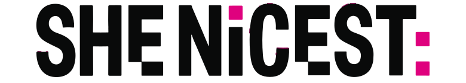
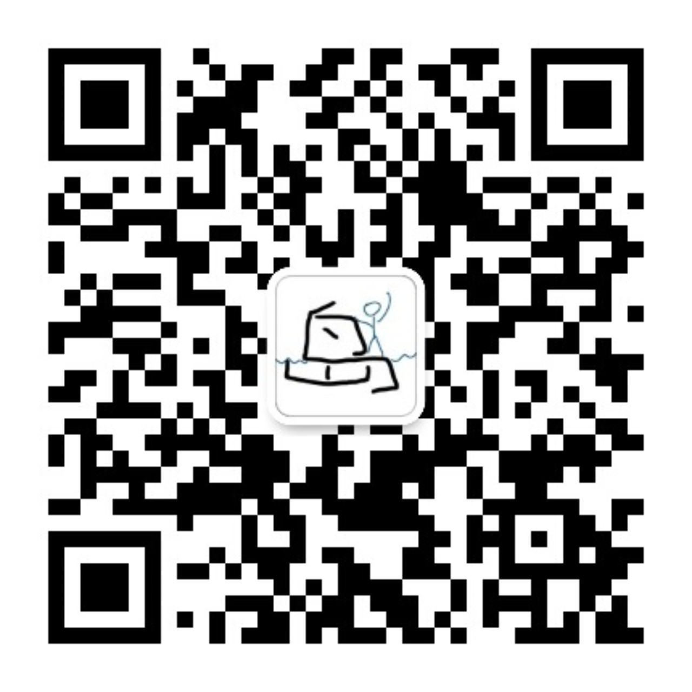
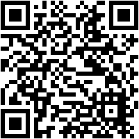

* Solo = 选择了更纯粹的路，需要 AI 作为联合创始人，极度克制项目范围

发链接给以前就认识的朋友，提前针对赛题充分解读
在群里或赛前 meet up 主动展示背景和技能，带 idea 去招募
找到同样在寻找队友的人，主动介绍你的技能和兴趣
SheNicest 的现场组队 = 在安全的场域里主动连接
新手建议认领：资料整理、用户访谈、UI、pitch、测试、demo script
别把熬夜浪漫化。睡眠不是拖累，是性能优化。
把讨论变成可检索资产，不要让想法死在空气里
避免重复造轮子，封装成 Hackathon Skill
参考学术研究和前人思路，不仅用代码，也用思路
Reddit 等论坛，了解网友对工具/领域的情绪
AI 输出必须回到原始链接、论文、官方文档、论坛原帖验证
扫码获取完整文献包 + 演讲者备注

公众号

小红书
资源包：Git 急救卡 + 30分钟契约模板
扫码领取 / 关注 SheNicest 公众号
公众号
小红书